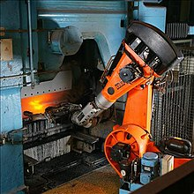
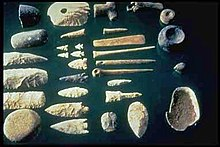

La tecnología (del griego τέχνη téchnē, ‘arte’, ‘oficio’ y -λογία -loguía, ‘tratado’, ‘estudio’) es la suma de técnicas, habilidades, métodos y procesos utilizados en la producción de bienes o servicios o en el logro de objetivos, como la investigación científica. La tecnología puede ser el conocimiento de técnicas, procesos y similares, o puede integrarse en máquinas para permitir su funcionamiento sin un conocimiento detallado de su funcionamiento. Los sistemas (por ejemplo, máquinas) que aplican tecnología tomando una entrada, cambiándola de acuerdo con el uso del sistema y luego produciendo un resultado se denominan sistemas tecnológicos.3
La tecnología tiene muchos efectos. Ha ayudado a desarrollar economías más avanzadas (incluida la economía global actual). Muchos procesos tecnológicos producen externalidades negativas como la contaminación y agotan los recursos naturales, en detrimento del planeta Tierra. Sin embargo, la tecnología también puede ser usada para proteger el medio ambiente, buscando soluciones para resolver de forma sostenible las crecientes necesidades de la sociedad, sin provocar un agotamiento o degradación de los recursos materiales y energéticos del planeta o aumentar las desigualdades sociales.
Las innovaciones influyen en los valores de cada sociedad y cuestiones éticas de la tecnología. Los ejemplos incluyen el surgimiento de la noción de eficiencia en términos de productividad humana y los desafíos de la bioética. El campo interdisciplinario de estudios de ciencia, tecnología y sociedad abarca tales efectos culturales, éticos y políticos.
Han surgido debates filosóficos sobre la tecnología, con desacuerdos sobre si la tecnología mejora o empeora la condición humana. El neoludismo, el anarco-primitivismo y movimientos similares critican la omnipresencia de la tecnología, argumentando que daña el medio ambiente y aliena a las personas. Los defensores de ideologías como el transhumanismo y el tecnoprogresismo ven el progreso tecnológico continuo como beneficioso para la sociedad y la condición humana.
La tecnología es una respuesta al deseo del hombre de transformar el medio y mejorar su calidad de vida. Incluye conocimientos y técnicas desarrolladas a lo largo del tiempo que se utilizan de manera organizada con el fin de satisfacer alguna necesidad.

Un Poco de la Historia
La historia de la tecnología es la historia de la invención de herramientas y técnicas con un propósito práctico. Los artefactos tecnológicos son productos de una economía, una fuerza del crecimiento económico y una buena parte de la vida. Las innovaciones tecnológicas afectan y están afectadas por las tradiciones culturales de la sociedad. También son un medio de obtener poder militar.
La forma más simple de tecnología es el desarrollo y uso de herramientas básicas. La invención prehistórica de herramientas de piedra, seguida por el descubrimiento de cómo controlar el fuego, aumentaron las fuentes de alimento. La posterior Revolución Neolítica cuadruplicó el sustento disponible de un territorio. La invención de la rueda ayudó a los humanos a viajar y controlar su entorno.
La historia moderna está relacionada íntimamente con la historia de la ciencia, pues el número del descubrimiento de nuevos conocimientos ha permitido crear nuevas cosas y, recíprocamente, se han podido realizar nuevos descubrimientos científicos gracias al desarrollo de nuevas tecnologías, que han extendido las posibilidades de experimentación y adquisición del conocimiento.
Los desarrollos en tiempos históricos, incluida la imprenta, el teléfono e Internet, han reducido las barreras físicas a la comunicación y han permitido que los humanos interactúen libremente a escala global.
Durante la Edad de Piedra, los humanos eran cazadores recolectores, un estilo de vida que comportaba un uso de herramientas y asentamientos que afectaba muy escasamente a los biotopos. Las primeras tecnologías de importancia estaban asociadas a la supervivencia, la obtención de alimentos y su preparación. El fuego, las herramientas de piedra, las armas y el atuendo fueron desarrollos tecnológicos de gran importancia de este periodo. En este tiempo apareció la música. Algunas culturas desarrollaron canoas con batangas capaces de aventurarse en el océano, lo que propició migraciones a través del archipiélago Malayo, atravesando el océano Índico hasta Madagascar y también cruzando el océano Pacífico, lo que requería conocer las corrientes oceánicas, los patrones del clima, navegación y cartas estelares. La fase principal de predominio de la economía cazadora-recolectora se llama Paleolítico y el final se denomina epipaleolítico o mesolítico; la Edad de Piedra posterior, durante la cual se desarrollaron los rudimentos de la tecnología agraria, se llama periodo Neolítico

La Edad de Hierro empezó tras el desarrollo de la tecnología necesaria para el trabajo del hierro, material que reemplazó al bronce y posibilitó la creación de herramientas más resistentes y baratas. En muchas culturas euroasiáticas la Edad de Hierro fue la última fase anterior al desarrollo de la escritura, aunque de nuevo no se puede decir que esto sea universal. En la agricultura, las herramientas fuertes para el cultivo como las hachas de hierro, los picos, los rastrillos, las palas y las puntas de los arados hacían que la limpieza de la tierra y la producción de alimentos fueran más rápidos y más eficientes y les permitía a los granjeros cultivar tierras más fuertes. Las herramientas más eficientes en todas las áreas tuvieron como resultado más avances tecnológicos, el desarrollo de la industria y también más tiempo para descansar. Un granjero de la Edad del Hierro que trabajaba con un arado de hierro tenía significativamente más tiempo para dedicarle a su trabajo, familia y otros asuntos. Más tiempo de descanso entre otras personas con frecuencia también condujo a más tiempo para las artes y las ciencias. De esta forma, las sociedades de la Edad del Hierro florecieron con estas herramientas de hierro más baratas. Combinadas con el desarrollo de los alfabetos y las monedas, el hierro comenzó el movimiento de la humanidad hacia nuestra sociedad moderna.
Invenciones de civilizaciones antiguas
Antiguo Egipto
Los egipcios inventaron y usaron muchas máquinas simples, como el plano inclinado y la palanca, para ayudarse en las construcciones. El papel egipcio, hecho de papiro y la alfarería fueron exportados por la cuenca Mediterráneo. Sin embargo la rueda no aparecería hasta que invasores extranjeros trajeron con ellos carros. También desempeñaron un importante papel en el desarrollo de la navegación marítima o tecnología marítima, mediterránea, tanto en barcos como faros.
Antigua Grecia
Los griegos inventaron muchas tecnologías y mejoraron otras ya existentes, sobre todo durante el periodo helenístico. Herón de Alejandría inventó un motor a vapor básico y demostró que tenía conocimientos de sistemas mecánicos y neumáticos. Arquímedes inventó muchas máquinas. Los griegos fueron únicos en la era preindustrial por su capacidad de combinar las investigaciones científicas con el desarrollo de nuevas tecnologías. Un ejemplo es el tornillo de Arquímedes, que primero se concibió matemáticamente y más tarde se construyó. También inventaron la balista y computadoras analógicas primitivas, como el mecanismo de Antiquitera.1 Los arquitectos griegos fueron los responsables de las primeras cúpulas y también los primeros en investigar el número áureo y su relación con la geometría y la arquitectura.
Aparte de la eolípila de Herón, los griegos fueron los primeros en inventar los molinos de viento y de agua, lo que les hizo pioneros en tres de los cuatro métodos de propulsión no animal anteriores a la Revolución industrial (el cuarto es la navegación), aunque solo se usó la energía hidráulica.
la historia de la tecnologia es muy extensa y verla nos costaria un monton, pero por ahora nos trasladaremos a a otra parte de la tecnologia.